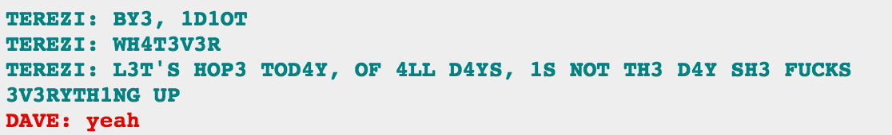
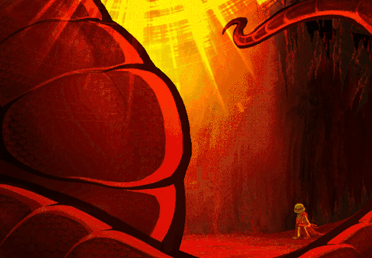
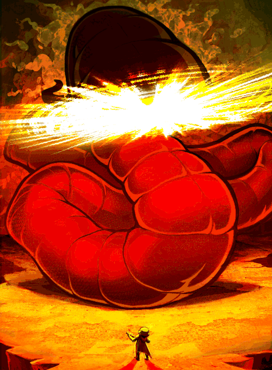
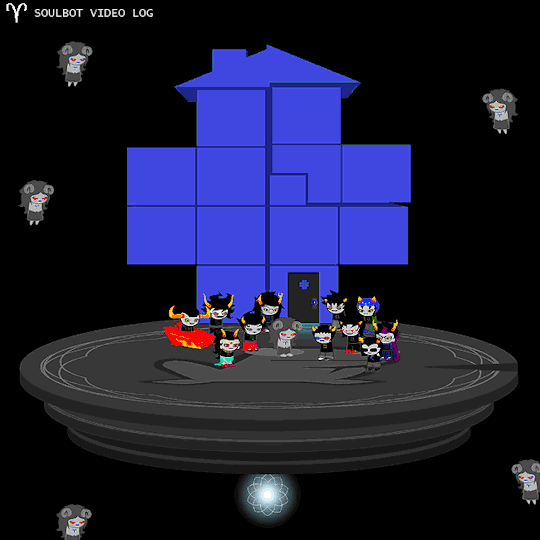
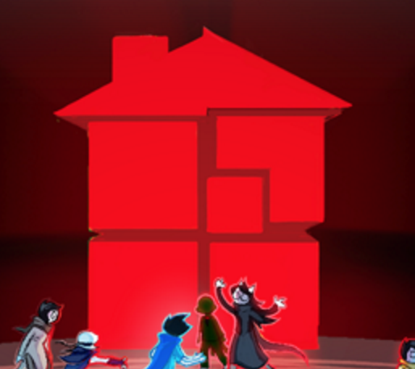
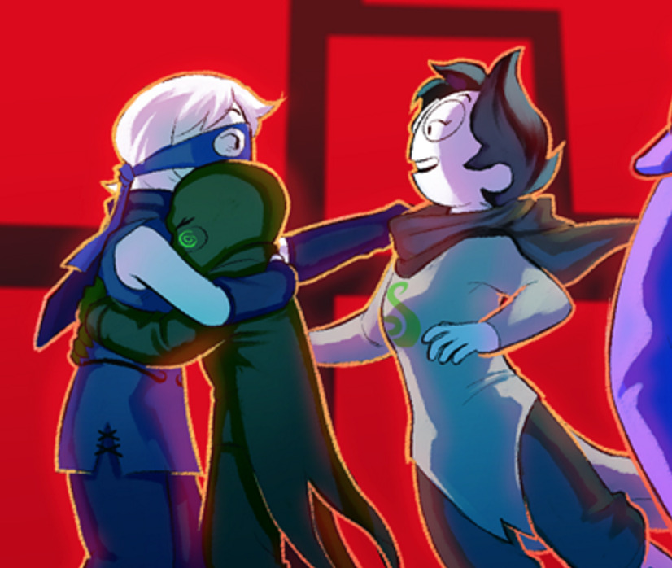
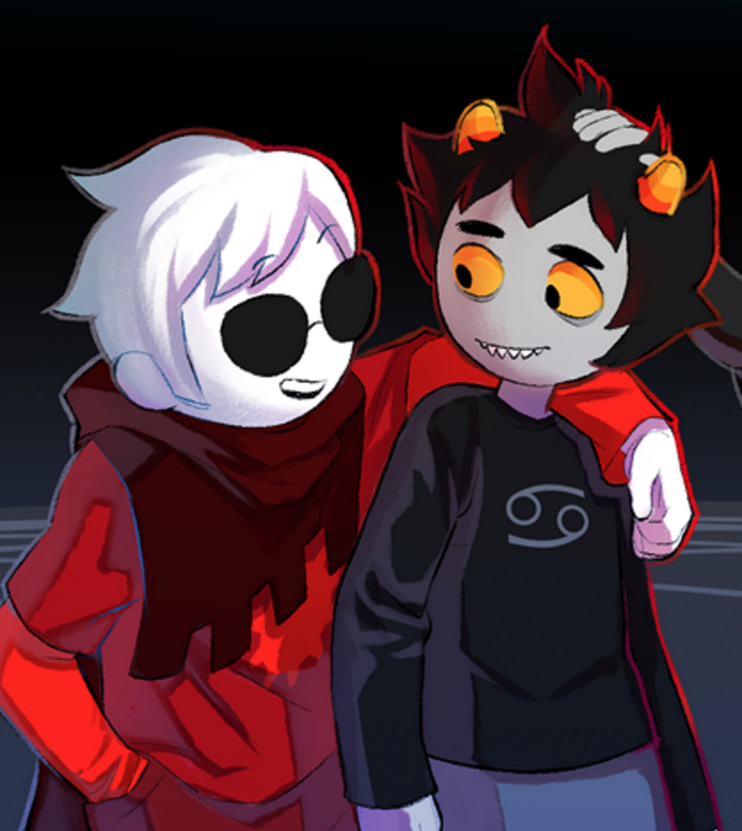

This is another upd8 that’s fairly light on stuff to analyze.

So…what has Jade really fucked up, so far? Aside from her time as Grimbark Jade, she hasn’t really made worse mistakes than anyone else. Am I forgetting something? I probably am but it also seems like Terezi is being unfair to Jade (like everyone else!).
I’m bummed that we skipped over the end of the “how did you tell your friends” conversation…but now that I think about it, of course we didn’t get it. It’s pointless to see it laid out, because we’re going to actually see Dave come out. I mean, as a gay girl, I want to hear Dirk’s coming out story. Coming out stories are important to us. I want to see Dave have his fears about coming out allayed. But it’s also unnecessary, because we’ve seen enough of Dirk’s childhood to know the shape of his coming out, and we know the shape of what he’s going to say. The actual conversation is more fit for a fanfic than the canon. But…I still wanted to see it.
BUT this upd8 was really well done. I love how it’s paced. I love how the images of the Jacks juxtapose with the quotes from the Davesprite convo. And I could write about how we’ve got an interesting parallel between the Game Over thing (where John used time travel to correct the mistakes of everyone else Terezi) and the Davesprite creation (where Dave used time travel to correct the mistakes of John Dave), but fuck that, lets just appreciate how awesome and fun this upd8 was.
Also I was so ridiculously wrong about expecting a Jack/Jack confrontation before the Strider/Jack one. Soooo wrong. But this is way more exciting!
Oh man what a cool update that I have so little to say about again! Of course for me, “so little” is still a good few paragraphs.
How long was Vriska sitting there, waiting for the ghost army to arrive? I guess she would have heard them approaching, but now I’m imagining her like, stretched out on the sand with her palmhusk, waiting impatiently for them to arrive, and then jumping up and shaking off the sand and sitting down so she’ll look cool the moment they arrive. Or maybe just sitting there while her ass falls asleep, just in case Meenah has really good eyesight.
Okay that term is meaningless in Homestuck but holy shit do you think we’ll see Caliborn interact with Yaldabaoth? I want to see players and their denizens so fucking much and we almost never see it (have we ever seen it, I think we just had the characters tell each other what happened afterward?).
I haven’t commented on anything Homestuck for a long time and with the final updates counting down to the 7th anniversary, I might as well talk about Caliborn possibly committing self-enucleation. What do I mean? Just hear me out and take a look.

See something strange? Look at Caliborn. Look at where his eyes are… or were. Look at how we have what looks like black lines sketched across them. One would think that it’s shadows at first, but that seems unlikely. Why? Because Mr. Sun Worm Guy is shining his light on him.
Throughout this whole upd8, Caliborn has been in shadow. More specifically, his face. And his face is still being obscured even when we can clearly see him. That just seems curious to me. Why would you keep Caliborn’s face hidden for so long? What purpose does that serve? Simple.
He removed them. He removed his own eyeballs.
Obviously, we knew that he will remove them eventually so that he can get his pool ball vision. But… Isn’t that a bit too early? Wouldn’t that be something that happens when he gets them? Not when you are about to fight a giant killer boss monster? Oh! But wait! Could it be?
Yes.
Yaldabaoth has a face that is quite literally as bright as a sun. Maybe brighter if that is possible. Fighting such a creature would be practically impossible because you will be too blind to see where he is. Not to mention how much that light will burn your retinas. So Caliborn did exactly what you would expect him to do. Rip out his own eyeballs so that
Yaldabaoth can’t blind him. It… It makes sense if you are Caliborn. Trust me.
So yeah. By the time the next upd8 arrives, Caliborn is going to be eyeball-less. It will be gruesome. And so very metal. Mark my words!
Oh man, I was thinking something similar too while reading the update!
Forgot to say something about it in my reaction but damn this does
perfectly describe what I was thinking and more.
Holy shit! Holy. Shit.
It makes so much sense for the guy that bit his own leg off to get free of Calliope. Of course he’d be willing to further self-mutilate in order to win.
Why does Yaldabaoth look more worm-like than the other denizens, who are way more snake-like?
ETA: @random2908 replied to me to point out that if you look really closely, you can see scales on Yaldabaoth! I’m not sure how much that nullifies my point: Yaldabaoth is still segmented, but it’s a definite point against it. Good catch!

Look at how he’s divided into segments. He even has a bit of a line running down him, like the ventral blood vessel of an earthworm. (I am not including images for comparison because worms are GROSS and this is not a bug blog! I do not want to risk grossing out anyone. Also be careful google imaging the ventral blood vessel because it’s a lot of dissection pictures.) Everything is present here as well, although less visibly so, so it might simply be an artistic choice that I’m overanalyzing. Even his statue on Dirk’s planet maintains the segments, although those are even less pronounced. Those segments might also be intended to be like the underside of a cobra, because that’s more segmented, but I can’t find any snakes that look like that all the way around, but they look pretty close to a stretched out version of an earthworm’s.
Compare with Typheus, who has an occasional line where he bends, but no segments or line running down his body. Compare with Echidna who clearly has scales. They are both really snake-like and don’t have the line running down them or the segments.
Okay so we’ve only seen three (?) denizens up close, but Yaldabaoth looks weird to a degree that I don’t think is just artistic license, and that weirdness is consistent through three different images.
Sidebar: It is really fucking hard to find links for this stuff, when I’m doing searches on the MSPA search page and Yaldabaoth comes up with one result, because when Aranea talked about him she wrote Yalda8aoth.
This update was cool but also kind of disappointing.
I’m trying not to think about all the stuff I want to see and all the questions I want answered, because if I do, then every page that doesn’t deal with it is a let down, and we can’t appreciate how cool it is to see Caliborn grinning up at Yaldabaoth (too bad the eye theory immediately got canned), or seeing the ruined but no longer on fire Prospit.
I really wouldn’t blame Hussie for not answering every question, because we all want Homestuck to end eventually, and we don’t want the ending of Homestuck to just be a massive breakdown of how all the mysteries worked. It’s okay not to have all the answers! But…I was expecting some dialogue today…
Note to self: Stop expecting things from Homestuck, just enjoy it.
Oh shit you guys it’s been like, more than a year since I used screenflow, I’ve completely forgotten how it worked.
Plus the video is just 100% me being unable to process anything happening that fucking fast.
Enjoy I guess????? You asked for it, so I’m not about to be embarrassed about all the ridiculous mistakes I made!
Oh god I just checked it and I forgot to have it record the computer sound and the microphone. What a mess! So…I dunno, should I even upload it? That much I will be embarrassed about.
It’s gonna take 30 minutes to save it and then I still have to upload it to Youtube jfc. And that’s if I can trust the program’s estimation!
I recorded the audio when I watched it a second time and spliced it in, so you’ll get the full effect!
Also I gotta say, that was so frantic and fast paced that I forgot what happened ten seconds after it happened! (Which is why I flubbed that thing at the very end, because my brain literally hadn’t saved what had happened moments before!) I’mma have to watch it ten more times before I can really get everything.
You may think just by looking at the image that this is supposed to be a joke or something. But no. As impressive as Dave killing Lord Jack and Roxy killing Condesce is, this motherfucker right here. Karkat Vantas outshone everyone in the update by taking down Clover.
Because lest you forget, Clover’s whole deal is probability manipulation. And not just some weeny baby level either. His luck is so absurd that he literally takes any chance of you hurting him and turns it to 0. You literally have a 0% chance of ever harming him. So much so that even a gun at point blank won’t do it. While he’s harmless in every other aspct, the little guy was literally made to be unbeatable.
And Karkat BEAT him. With a 0% chance of winning the fight, Karkat SOMEHOW caught Clover. He pulled off a feat that is PHYSICALLY IMPOSSIBLE. He essentially said fuck you to the rules of reality and spat in the face of fate.
KARKAT BEAT CLOVER AND THE FACT THAT HE DID MAKES LITERALLY NO SENSE. THE BOY IS A GOD.
*salutes the glory that is Troll!Moses*
Not only that, but he stood up to Lord English and tried to kill him single handedly while everyone else thought he was insane! ;D
We can expect big things for Karkat in the future!
OKAY So I haven’t seen anyone talking about how PM punched out Jade.
PM is like, the good one, right? But Jade is 1. also good, and 2. an innocent in their fight. And having Bec in her should make it really hard, if not impossible, for her to hurt Jade, right?
My theory, that I can manage from my broken brain, is that while Jack Noir is a bad guy, that’s not enough to override the Bec part of him that loves Jade ever so much. But PM is *righteous* and love for Jade won’t stop her from doing the right thing.
An idea for what this means: There’s a bunch of parallels between her and Jack, and the cherubs. And alt!Calliope is already not the nicest, not the warmest, not close to anyone in particular…Maybe this is foreshadowing that the destruction of the Green Sun (or whatever it is she’s about to do, I’m not sure it’ll be destruction) could be a major sacrifice.
But then that means that bad things might happen to Jade and that is really NOT okay.
ALSO WHAT THE FUCK ARADIA’S TIME POWERS WORKING ON LORD ENGLISH????
Can anyone explain that? I don’t get it!
I can’t think of any aspect v. aspect fights we’ve had other than this, but I’d assumed that Lord English being the Lord of Time would mean that he’d be immune, or at least heavily resistant, to other time players.
Maybe this means that a Knight of Time could turn a Lord’s powers against him! If Dave really is the one who is going to take him out. If a Knight uses time and a Lord actively embodies it…
I can’t overstate how great it is to see almost everyone happy or hopeful in this version of events. Rather than grim and serious like in the Game Over version.
The Condy fight is hilarious because like, you see Kanaya being silly in the background when she’s not fighting, but it’s turn based for everyone. They all just wait their turns unless they’re doing a fraymotif (in which case it is their turn).
I 100% get why he did it on Youtube, even if the fan base is much much smaller it would be so hard on the servers, but I really do wish this was a flash instead and we got to see it messing with our browsers like in other flashes. Like when Cans punches people back and forth through the timeline…ah, what could have been.
I disagree that Dirk got fraymotif resurrected because he would have permadied otherwise. We’ve seen god tier resurrections take some time, and watching the fight, if it was just Terezi and Dave for an extended period of time, it could have been really bad for them. It takes all three of them to keep the Jacks busy! Better for them to resurrect him than risk something bad happening while they wait for it to happen automatically.
Dirk’s control over his aspect seems particularly weak compared with everyone else’s, including Terezi, who isn’t even god tier. He just doesn’t seem to do much damage and his attacks seem to get interrupted faster, but maybe that’s just me? It’s so hard to tell, everything happens so fast. But he also hasn’t successfully used it yet, except in Caliborn’s Masterpiece!
ARquius’s reaction to Dad is really curious. Dirk didn’t seem to have any attachment to Dad that would lead to it…
Seriously, WTF is with Yaldabaoth’s face when he attacks Caliborn? Really. I feel like it’s a reference to something but I do not know what.
I really wonder what’s about to happen with Vriska and Lord English. She was really conspicuously absent during the fight, and especially at the end, when LE appears to be victorious over everyone attacking him. And we only saw Hussie there, fighting her. Was he keeping her out of the way, until she would be narratively most powerful?
Okay so when Dirk is being choked out and does the serious face, I don’t think he was signaling to Dave that it was okay to sacrifice him to kill the Jacks. The blocking doesn’t seem to work. Dave is off to the far right of Dirk, looking at him in profile, while Dirk is looking straight ahead. I think he’s accepting that Jack might kill him?
Lord Jack made a black hole when his head exploded. What is going to happen when Lord English dies???
So I definitely think we’re being punked now. Hussie is just toying with us. I bet the rest of these updates are just going to be pictures. And they’re great pictures! But I reeeeeeeally want dialog.
Act 7 is probably going to be huge, clear your calendars now. I mean, it wouldn’t make sense for it to be anything but huge, right?
Aaaaaanyway.
For some reason I love these pictures way more than yesterday’s? Maybe because yesterday was just everybody we expected to be healed being healed, and everybody we expected to meet up meeting up. I hadn’t been expecting a Ms Paint/(b1) Jack Noir meet up, or a Callie/Jade meet up! I wonder if it’s intentional that the two people doomed!Calliope said were pointless are now in the same place.
Also OH MAN Callie is so tiny!
And why, whyyyy, would Ms Paint rip a bandage from the top of her dress, rather than the long, pointless trail? I haven’t worn a lot of strapless dresses in my life, but in my experience that material is 1. pretty stiff and 2. important for holding the dress up. So. weird.
I didn’t do an update post for yesterday because I was thoroughly freaked out by ipgd replying to my post about act 7 being two pages.
I really want to be happy about this upd8 but it’s really effing ominous.

Because the last time we saw a group of victorious heroes on the lilypad was right before Bec Noir entered their session (via a scratch! which I wanted to ask BKEW about but he just went idle on AIM, shucks) and kept them from entering their newly created universe.
Also, do you notice something missing from that red house?

Where is the door??????
People have also pointed out that it’s not flipped, like the red icon was, which may be an oversight by a guest artist, but I’m pretty sure you don’t just forget to add a door. Especially since the following panels really focus on the doorknob. So that’s one major difference, and one potentially major strange thing.
And Terezi definitely noticed that Vriska isn’t there. She’s walking to the edge of the platform to watch for her to fly in, I assume. I also assume that this is going to be about the point where someone else will be showing up.
There’s just too many parallels between how Aradia describes Bec Noir entering their session, and the session that we’re seeing supposedly about to end right here.
But all that aside, getting to see everyone be friends again was pretty sweet. It looks like Dirk apologized to Jake, Kanaya and Rose are obviously still so happy together, Jade and John reunite…

Roxy literally hauls Jane in for a group hug with Callie, who is clinging to her SO ADORABLY!

Dave and Karkat’s reunion leaves a bit to be desired, and I wonder if it would be a bit more explicitly red if they’d known how much people were denying that they’re matesprits not moirails. I mean it’s adorable and I don’t expect either of them to make out in front of everybody, before Dave has even come out, but it’s also super chill and without dialogue that’s disappointing.
I’m so excited to see John and Dad reunite, even if it’s a completely different version of Dad? Actually that makes it kind of weird…we know that the guardians are special, and that seemed to apply even to the non-player guardians, but…hm.
what makes the pages of them on the meteor even more ominous is that before Dad and nannasprite came on there, there were 12 people on the lillypad. also I think the no door is because billious slick isn't ready yet, WV still needs to drop his ring in the forge to make the frog get to his final form,
*counts* Oh my god you’re right.
I mean, also, we’ve got Nannasprite flying around the lilypad, and if we have the other sprites show up we’ll potentially have even more parallels.
But then…
Oh shit that’s how the sprites could die. Holding off Lord English. They are the kids’ duplicates, after all. Who have died before.
And who are somewhat pointless.
Well then!
And thanks for pointing out the door thing! Of course they can’t have a door to a universe that doesn’t exist just yet.
I’ve put my finger on my problem with the current upd8s and now I can enjoy them a lot more.
They’re basically in a false falling action. Or at least that’s what all of the characters, except Terezi, think it is. They think that the story is over, it’s denouement time, so they’re all fine with just reuniting and getting ready to collect their reward. The bad guys are dead, they’re over their emotional issues, their quests have been finished. As far as they’re concerned. We’re not getting dialogue because the characters are done talking because they’ve said all that they need to say, or at least the really important stuff. It’s the end, it’s time to charge on to the epilogue.
Meanwhile, we’re sitting here being annoyed because we know it’s not the end. We’ve got our lists of enemies still floating around, and the quests that haven’t been done, and all the loose ends that won’t be tied up by them going through the door. We know that there’s another act between now and the end. We’re basically the stereotypical horror movie watcher, yelling at the screen that the monster is in the room do not go in there. Why did you turn your back on Her Imperious Condescension? Of course Vriska couldn’t kill Lord English on her own and that’s why she’s not here.
Or at least that’s how I like to think about it right now. It’s frustrating, but it makes sense. It would be a lot less frustrating if we didn’t know that we’re two days from the end of everything and if we weren’t told that act 7 is two effing pages.
You can tell Homestuck is fucking bullshit any time you try to explain how Homestuck’s fandom is being terrible, and you have to break out a fucking chart to explain the different timelines and different versions of characters just to say, “People are arguing over whose grief is more legit and it’s obnoxious.”
Also I’m looking at the tags for my post about these upd8s and half the responses are “That makes sense, well put, thanks” and half of them are “ACT 7 IS TWO PAGES WHAT THEF UCK”
ANYWAY THIS UPD8!
It was super sweet, I grinned the whole time, I love it. I am still grinning over it. Jade’s face is perfect, everyone’s face is perfect.
The fact that it ends with everyone lined up, smiling, even Terezi, makes me think that tomorrow’s upd8 is where the violence will start. I am/was mostly sure that it would wait until act 7 and all of these upd8s would be chill, but…
Altho if tomorrow doesn’t have Jane also getting a big hug (lookit how happy she is! she looks ready to run to Dad as well!) and then a huge fucking group hug because all of these poor children need a parent so effing badly, I’ll be so bummed.
So, today’s upd8 is another light one, although to me this signals that not only is there danger on the lilypad, this could go bad too.
I was wrong about the next upd8 being about Jane hugging Dad as well and that’s a bummer. I’m still holding out hope that when we get to tomorrow, we’ll see it, but that seems more wishful thinking than anything. I mostly feel guilty about judging people for assuming that we wouldn’t get the hug. Sorry guys, I was so wrong!
So LOTR references, yay! The fact that we’re seeing it makes me think that they’re going to get thwarted somehow. The formerly Bec Noir, now just Jack Noir, seems to be out of the picture, but we have both Lord English and Condy (probably) active still, and people have pointed out that the Draconian Dignitary hasn’t been seen in a while. There may be something unforeseen that could happen as well. Or maybe we’re just rolling up to see the birth of a Genesis Frog and everything there will be fine, and guys, I am terrible at predicting things.
Also the handholding up the volcano is SO CUTE.
Once again, I feel like PM’s face is a refrance to something that I’m not getting. I expect after I make a cup of tea and sit back down I will have 20 asks telling me that it’s something terribly obvious.
I’ve heard rumors that 4/13′s update will be dropping tonight. If it drops before 2AM I’m just gonna probably make a big coffee and decide to pull an all-nighter because fuck doing a repeat of the day after Collision! Who is with me? (Also if yes, people should Skype me at cthaehsvoice or AIM me at outbroadwaystyle or, I guess, gmessage me at foxtailbarley, why not include all of them. Srsly feel free to hit me up at 4AM tonight I will BE THERE and we can all have feels together.)
Actually is there a Skype group for freaking out about Homestuck feels? There should be. I know Reddit and 4chan do stuff but Reddit and 4chan both freak me out, that’s why I tumblr.
That was really pretty but I would have traded every drop of gorgeous animation for just fucking text. And like, shitty sketches.
Hell, even if the characters just talked about their relationships and we never learned anything about the mysteries.
I feel so dumb for everything I wrote about how we were getting a false denouement. I can’t believe it was all real. I can’t believe the reason we got no dialogue was because it was over and the characters were done talking.
And a lot of Collision feels like a lie. So much of it was ominious, especially at the end…and now it’s nothing.
I just…like, I haven’t been in the fandom for nearly as long as a lot of you all, and I haven’t done the theory crafting like some of you, but I feel betrayed. Maybe only by myself and my own expectations, but also by my faith that Hussie was taking so long because he wasn’t sick of Homestuck and we were going to get a decent ending, but betrayed none the less.
Not that this wasn’t “decent” but it really sort of stopped being Homestuck. Homestuck was mostly pictures and dialogue and…we got none of that.
I’m super excited to reread and liveblog (although obviously with way less updates than in the first reads), because Homestuck is so great and I love it so much, and even looking up stuff to verify my complaints about Act 7 makes me love it all the more and all over again!
But it has to wait until I can read without immediately cringing and getting all painful nostalgic for ~what might have been~. Or it’s going to be nothing but “THIS WAS SO GREAT WHY DIDN’T HUSSIE WANT TO INCLUDE IT IN ACT 7???????” and nobody wants to read that.
If anybody has ideas for our liveblog rereads, or is starting one soon, plz drop me an ask!
So my dearest Milli ( @grammarmancer or her homestuck blog @homestuckbecausereasons )traded watching/reading homestuck/naruto so I am now 1000 pages in and apparently people wanna know my thoughts and I’m a sucker for attention. So I made a blog and through in Naruto because why the hell not. I’ll figure out tags to mark each clearly…later. Right now this is just Homestuck.
So. My feelings on homestuck…
I like it! Jon and Jade are my favorite (and I actually have enough characters around now that isn’t like picking your favorite foot.) but I p much like everyone right now.
There are a lot of interesting plot things going on. I modded RP games during the biggest wave of homestuck fandom, so read a lot if apps and know a lot without context, so I’m trying not to over think things so as not to spoil (respoil?) myself by triggering off memories and just sorta…going with the flow. Which is nice and enjoyable.
The only thing I dont really get is how much I was told the beginning sucks. Because I do enjoy it, I’m half excited for “better” to come, and half worries that what’s “better” won’t be my cuppa. Still, we just started meeting really trolls so I’m excited.
And I am totally open to asks (about either fandom, I’ll do a starter Naruto post…later.) I know a lot of Homestuck spoilers but I’m trying not to so probably avoid that.
I’ll also try to get an icon that’s not my cat eating broccoli too but you know whatever.
Hey guys! Here is my friend’s Homestuck and Naruto blog. You should follow it.
I’m pretty sure Act 5 will be your cuppa. It gets a lot plottier, stuff starts happening faster, and you get the real cool fourth wall breaking and time travel stuff then! It’s not that it’s really different, it’s just that Hussie stopped taking commands at that point and just started writing the story normally, so the pacing improves a lot! That sort of thing. Same sense of humor, same characters, all that.
Act 5 is one of the finest things ever written, IMHO.


{kind=link}